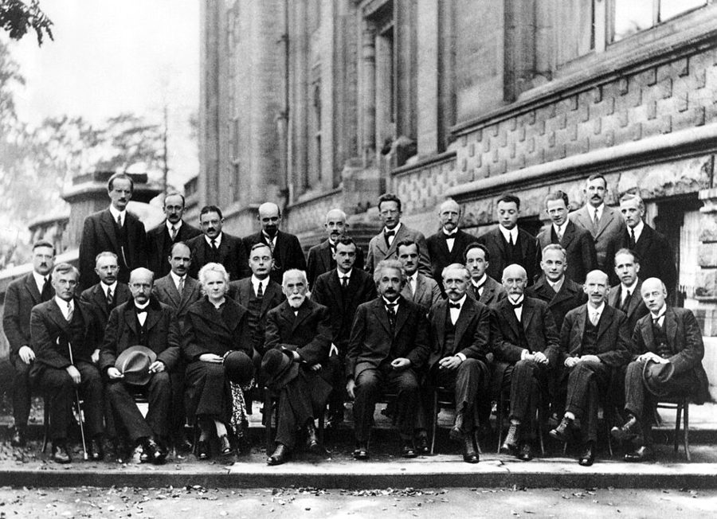
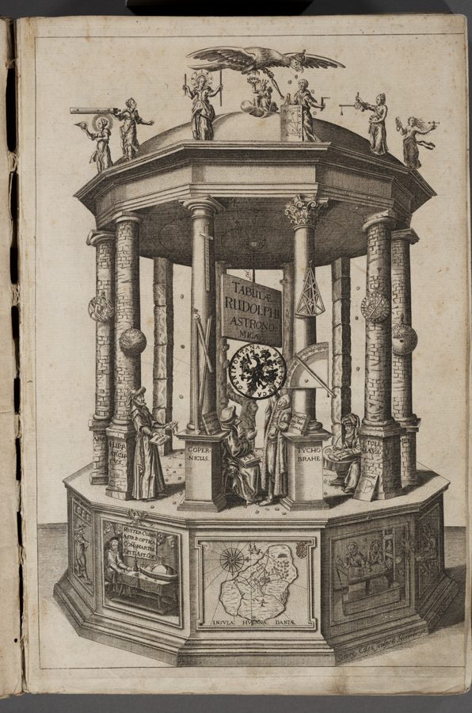
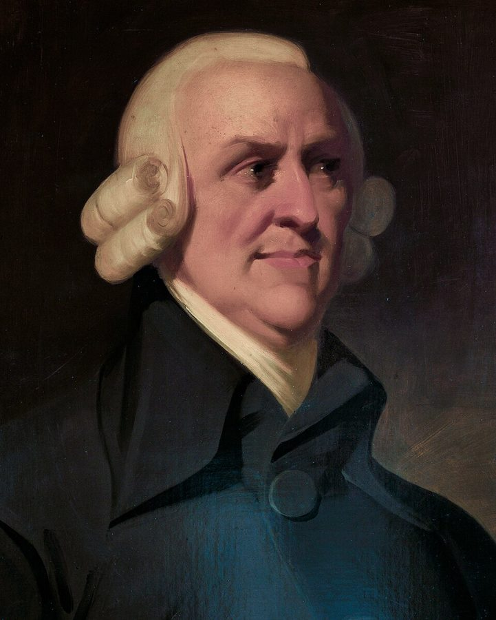
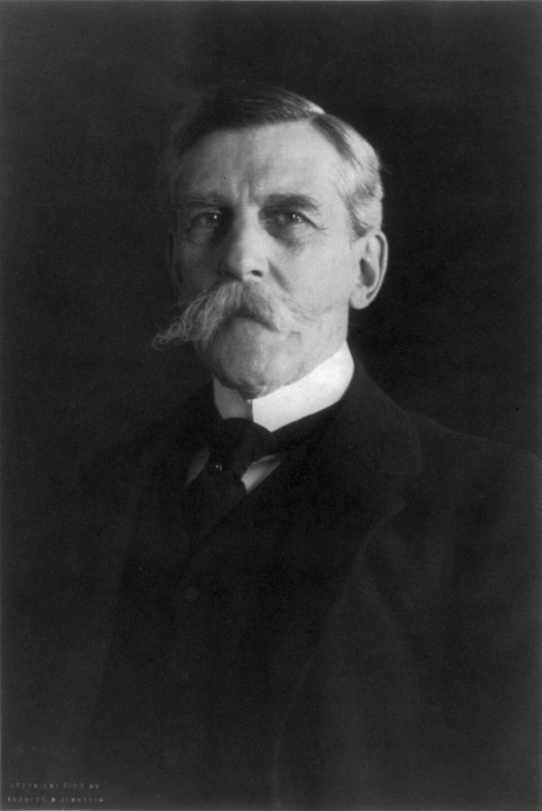

这一页在做什么
前三章讲科学怎样认识世界：归纳、证伪、明确知识和隐性知识。这一章换个角度：科学是一群人做的事。作者先讲科学家个人身上的道德和士气，再讲一个悖论：个人固执，整体反而开放。然后他把科学和市场、普通法、代议制民主摆在一起，找它们共同的结构。这一章短，像一座桥，一头是第一部的科学哲学，一头是第三部的「自由和试错」。读的时候抓两条线：类比哪里贴切，哪里只是类比。

1927 年在布鲁塞尔召开的第五届索尔维物理学会议，主题是量子力学。前排有 Planck、Marie Curie、Lorentz、Einstein，后两排有 Bohr、Heisenberg、Schrödinger。照片和本书无关，放在这里是因为这一章的题目：科学是一群人在吵、在比、在互相挑错中做成的事。前排左二的 Planck 留下过一句关于「新理论怎样胜出」的名言，见「本站怎么看」。Benjamin Couprie，公有领域，维基共享资源 读之前：这一页在全书的哪里
第 3 章收尾说，科学上的「真」就是能做出可靠、不显然的预测；这一章第 16 段把同一个意思搬到市场上：市场不问「绝对价值」，只要价格。几处指回前文，本站回原文核过：第 6 段「知识的真正儿子」是第 1 章第 21 段的培根；第 8 段日心说的例子是第 2 章第 35 段；第 24 段明说是第 3 章那场明确知识和隐性知识之争；第 25 段的「开放社会」导言第 11 段提过。末段那句「没有实验的科学只是马虎的哲学」，第 5 章正面接下。
第 12–25 段把科学和市场、普通法摆在一起，作者自己的措辞是这些相似「至少表明」有共同结构的可能。别顺手把「科学靠得住」移到「市场也靠得住」上：两者的反馈不一样，见「本站怎么看」。
科学靠一群各有私心、各自固执的人来做，整体上凭什么还能进步？市场和法庭也是这样吗？
读的时候带着这几个问题。不用先找答案，读完回来对照「检查一下理解」。
饭桌上三个学理工的人脱口而出「你不能那样做」。作者觉得不寻常的是哪一点？§1
作者说科学家个人可以、往往也必须固执。个人的固执怎么变成整体的开放？§2
作者把科学、市场、普通法的共同点分成两组。哪一组是一切演化系统都有的，哪一组是这几个「开放系统」特有的？§3
既然这么像，科学和市场差在哪？科学和比较文学又差在哪？§3
这一页的路线
三节越走越远。§1 从科学家个人出发，靠一则饭局上的小故事立起「道德」和「士气」两样，最后一段转身，预告下一节的悖论。§2 讲这个悖论，中间借用第 2 章的日心说和「创业者」的比方；末段口气从描述变成评论，「高贵的谎言」在这里出现。§3 是全章的重心，像在填一张对照表：先把科学和市场的共同点分两组逐条列出，再拉来普通法，靠 Holmes 的两本书撑着。第 23–25 段从「相似」跳到「共同结构」，再落到握着武力的国家和开放社会，这是全章跳得最大的一步，读时盯住作者的限定词。最后三段收回来讲差别，末句把话头交给第 5 章。
§1–§2：科学家这个人群
科学家个人 道德和士气 · §1
个人固执，整体开放 科学的创业者 · §2
科学家的情感需要 高贵的谎言 · §2
§3：和别的系统比
科学、市场、普通法 两组共同点 · 第 13–22 段
共同结构？开放社会 第 23–25 段
差别：实验 第 26–28 段
第 5 章：没有实验的科学
中间那一列是每一节的重心
本站示意图。上一行是科学内部的事，下一行把科学放到更大的一类东西里去比；虚线箭头是作者转向的地方。 作者落在哪： 科学的进步是「涌现」出来的：不靠哪个人看对了，靠一套规则让很多固执的人竞争、互相淘汰。市场、普通法可能是同一类试错系统，背后都有一个握着武力却不拿它强推真理的权威。科学独特的地方，是实验这条连着现实的反馈。
分节地图
这一页是原书第 4 章的三节，粗体是本站给的节名，下面是原书这一节第一段开头的几个词，在 Kindle 里搜它就能跳过去（原书的小标题也在目录里）。每节标了档：「先读」不读就跟不上全书主线，「有空」好看但跳过不丢线。读完打个勾。
「你不能那样做！」约 500 词 Science does not proceed as a … 一则饭局轶事，讲科学家对造假的条件反射。跳过只少这个故事；第 7 段末的悖论预告，§2 开头就接得上。 科学界的创业者约 500 词 Scientists can be, and often must … 第 8–10 段讲个人固执和整体进步，第 11 段转到科学家的情感需要，「高贵的谎言」在这里。 科学、市场与普通法约 1300 词 The parallels between science and markets … 第 13–18 段两组共同点，第 20–22 段普通法，第 23–25 段跳到开放社会，第 26 段起讲差别。
先用中文过一遍：这一页的概念
先把这一页用到、作者默认你懂的几个概念讲一遍。讲的是概念本身，作者拿它推出什么，读原书时自己看。前面讲过的范式 、隐性知识 、工具主义 、结构化和非结构化试错 ，点进去看。
§2 涌现 emergence, emergent phenomenon 整体表现出来的性质，在任何一个组成部分身上都找不到。一只蚂蚁不会规划路线，蚁群却能找出通往食物的近路；没有哪个司机想造成堵车，早高峰的车流里却会无缘无故冒出一段走走停停。这是复杂系统研究里的常用词。要分清两点：涌现不是神秘力量，整体的行为完全来自个体之间的互动，只是光看个体推不出来；涌现出来的也不一定是好东西，堵车和踩踏一样是涌现。程序员的类比：每个客户端都按简单规则失败重试，合起来可能形成压垮服务的「重试风暴」，单看哪一段代码都看不出来。下面这张图是作者在第 8–10 段描述的那种涌现，本站画成一个循环。
个人：各押一个想法，都很固执
押错
押错
押对
押错
押错
奖赏和名声
整体：同时做三件事
细化它
使用它
挖它的墙脚
没有哪个人需要虚心，整个领域却在不停换理论
本站示意图。右边的虚线是「新一轮挑战」：今天的胜者，明天就是被押错的人挑战的对象。 在这一页： §2 的原书小标题就是「作为涌现现象的科学进步」，§3 的小标题说市场、普通法是「别的涌现式社会现象」，第 15 段把同一个结构用到市场上。
§2 看不见的手 invisible hand Adam Smith 的比喻。他在《国富论》（1776）里只用过一次：商人只想着自己的安全和利润，却像「被一只看不见的手引导着」，促进了他本来无意促进的社会利益；更早的《道德情操论》（1759）里也用过一次，讲的是财富怎样分到穷人手里。到 20 世纪，经济学家才把它当成市场机制的代名词：价格让无数只顾自己的人，协调出一个谁也没设计过的秩序。要分清两点：Smith 本人没有说自私总是好的，他也提醒过同行商人凑在一起常常是在合谋抬价；今天的经济学同样讲「市场失灵」，比如工厂排污，代价落在没参与买卖的人身上（外部性），这时看不见的手就管不了。
在这一页： 第 10 段作者给 as if by an invisible hand 加了引号，没点 Smith 的名，措辞也和 Smith 原文不完全一样；第 15、17、22 段把它当成科学、市场、普通法共有的一条。
§2 高贵的谎言（作者的用法） noble lie, leap of faith 原出柏拉图的《理想国》：城邦的统治者给百姓讲一个神话，说人生来身上掺着金、银、铜、铁，所以分成不同等级，让各阶层安于其位。柏拉图承认这是编的，但认为它对城邦有益，所以叫「高贵」。作者借这个词，意思变了：不是统治者骗百姓，是许多科学家对自己说的一个信念，相信自己参与的过程在让人类一步步逼近绝对真理。作者说这个信念不是科学本身能证明的，却撑着科学家干下去。他紧接着改口：说得公道些，这是一次「信仰的跳跃」（leap of faith），没有证据也选择相信。两个说法都要记住，后一个口气温和得多。
在这一页： 第 11 段第一次出现；第 16 段给市场找了对应的信念（回报和价值有关），第 22 段给普通法也找了一个（在为正义服务）。
书里的人、研究和背景
按在书里出现的顺序排，标题前是节号。只讲到读懂这一页需要的程度。
§1 科学家的规范，和管不住的人第 2–5 段讲科学家对数据诚实的「禁忌」。社会学家 Robert K. Merton 1942 年写过一篇有名的文章，把现代科学的规范归成四条：知识归共同体所有、只看证据不看出身、不为私利、有组织的怀疑，常缩写成 CUDOS。作者没提 Merton，讲的是同一类东西。规范管不住所有人：2009 年 Daniele Fanelli 在 PLoS ONE 上汇总了多项问卷调查，平均约 2% 的科学家承认自己至少一次伪造、篡改或修改过数据；问到同事时，约 14% 的人说知道有人篡改过。这是第 2 段那句「制度防范充其量只解决一部分」的背景。
§1 皮尤 2009 年的调查第 5–6 段几句「公众很尊重科学家」「科学家比公众更不愿限制动物实验、干细胞研究」，正文没说出处，书后注释是皮尤研究中心（Pew Research Center）2009 年和美国科学促进会合作的一项调查，同时问了普通公众和 2500 多名科学家。比如赞成用动物做科研的，科学家 93%，公众 52%；赞成联邦出钱支持胚胎干细胞研究的，科学家 93%，公众 58%。在公众眼里，只有军人和教师比科学家更常被看作「对社会福祉贡献很大」。这项调查十几年后的续篇，见「对照今天」。
§2 从哥白尼到开普勒
开普勒 1627 年出版的《鲁道夫星表》卷首画：一座天文学的神殿，中间两人身旁标着 Copernicus 和 Tycho Brahe 的名字。底座左边那一格里摆着的书，书名是开普勒自己的几部著作。Georg Köler 据开普勒的设计刻版，公有领域，维基共享资源 第 8 段说，日心说起初比旧的地心说算得还不准，这个局面持续了几十年，直到开普勒改成椭圆轨道。这个例子第 2 章第 35 段讲过。哥白尼的《天体运行论》1543 年出版，1551 年有人据它编了一套星表（普鲁士星表），一般的说法是它并不比旧星表准；开普勒 1609 年提出椭圆轨道，1627 年据此出版的《鲁道夫星表》才明显胜过旧表。所以「更不准」是作者的说法，说「没有更准」更稳妥。作者要说的道理不受影响：新范式起初并不占优，要靠提出者的信念撑过那几十年。
§2 看不见的手出自谁
Adam Smith 的画像，人称「Muir 画像」，画家不详，大约画于 1800 年，多半是他去世后画的。作者不详，公有领域，维基共享资源 第 10 段作者把「看不见的手」加上引号，没说出处，默认读者知道是 Adam Smith；第 15 段讲市场时又用了一次。这个比喻本身见上面的概念块。作者把它从经济学借到科学上，说的是同一种结构：每个人只顾自己，整体却得了好处。
Adam Smith 1723–1790 苏格兰哲学家、经济学家，著有《道德情操论》（1759）和《国富论》（1776），常被称为现代经济学的奠基人。这一页里：第 10、15 段那只「看不见的手」。
§3 Polanyi 和《科学共和国》第 12 段说，科学和市场的相似，至少早在 Polanyi 就有人指出。作者在括号里说他是「又一位奥匈帝国出身的英国移民」，是在打趣：导言里的 Popper 和 Hayek 也都生在奥匈帝国时代的维也纳，后来都在英国教过书。正文说《科学共和国》是 1951 年的文章，书后注释给的出处是 1962 年 Minerva 杂志的第 1 卷，通常的记载也是 1962 年。Polanyi 1951 年出版的文集《自由的逻辑》里已经有「科学家像市场里的人一样自发协调」的说法，正文的年份可能是把两者记混了。第 24 段的「默会知识」也是他的说法。
Michael Polanyi 1891–1976 生于布达佩斯，物理化学家，后来在英国转向哲学，著有《个人知识》（1958）、《默会的维度》（1966），「默会知识」这个说法出自他。这一页里：科学和市场相似的早期提出者。
§3 普通法和 Holmes
Oliver Wendell Holmes Jr.，1902 年，他进联邦最高法院那一年。Frances Benjamin Johnston，公有领域，维基共享资源 普通法（common law）是英美法系的核心：法律主要靠法院一个个判例积累，后来的法官原则上遵循先例；对面是欧陆的大陆法系，以成文法典为主。所以作者说普通法不靠一个统一权威从上往下定义法律，而让不同法官、不同辖区各自解释、互相较量（第 20 段）。Holmes 1881 年出版《普通法》，开头一段那句「法律的生命不在逻辑，而在经验」是法学里最常被引的话之一；1897 年发表在《哈佛法律评论》上的演讲稿《法律的道路》说，法律说到底是对法院会怎样动用公共强制力的预测。作者自己也说，Holmes 的许多细节今天的学者有争议。
Oliver Wendell Holmes Jr. 1841–1935 美国法学家，1902–1932 年任联邦最高法院大法官，美国被引用最多的法学家之一。这一页里：作者拿他的两部著作说明普通法也是一种试错系统。
§3 开放社会和握着武力的国家第 25 段是全章跳得最远的一段。「垄断强制力」让人想起社会学家 Max Weber 1919 年的演讲《以政治为业》里给国家下的定义：在一片领土上成功地垄断了正当使用暴力的权利。作者的意思是：科学、市场、法庭能「开放」，是因为台下有一个握着武力的国家，它大体上不许人用武力解决争端，自己也不拿武力强推哪一种真理、正义或价值。他说这就是 Popper 所说的「开放社会」，导言第 11 段介绍过这个词。他接着说几百年来这更多是西方的特征，这是个很大的文明比较判断，书里没有论证。
词与短语
按节排，每节前面是分节地图里的节名。标着「每个字都认识」的，是熟词生义、习语和反话，最容易读错。灰色的那几个字是原句里的位置，在 Kindle 里搜它就能找到。
§1 「你不能那样做！」
disembodied
… proceed as a disembodied logical process …
脱离肉身的、没有人参与的
本义是「灵魂离开了身体」。作者说科学不是一套自己运转的逻辑，是有血有肉的人在做。
as a practical generalization
… as a practical generalization, most scientists …
就实际情况大体而言
限定词：作者先声明这是笼统的概括，后面说的是「大多数」科学家，不是每一个。
bedrock
… The bedrock moral requirement for scientists …
最根本的
本义是地表下的基岩，引申为一切建立在它上面的根基。
at best
… but these are at best partial solutions …
充其量、顶多
不是「最好的」。作者说制度防范顶多只解决一部分问题，口气是往低里估。
bring something home to someone
… This was brought home to me …
让某人切身体会到
不是「带回家」。一件小事让作者突然真切地明白了上一段那个道理。
behind on one’s quota
… when she was behind on her daily …
没完成定额、进度落后
quota 是每天要完成的问卷份数。做市场调查按份数考核，落后了就有造假的动机。
some version of
… blurted out some version of …
大意如此的话
不是「某个版本」。三个人说的话不完全一样，意思都是「你不能那样做」。
social prohibition against boorishness
… the normal social prohibition against boorishness …
不许当众失礼的社交规矩
boorishness 是粗鲁。在饭局上当面指责一位熟人，是失礼的事；作者说稀奇的是三个人顾不上这个规矩。
it struck me
… It struck me afterward that we …
我忽然意识到
strike 在这里不是「打」，是「（念头）突然出现在脑子里」。
unself-conscious
… with an unself-conscious ethic about never …
不自觉的、习以为常的
不是「不自信」。是说这种伦理已经变成本能，自己都没意识到它在起作用。
ironic repartee
… engaged in ironic repartee about it …
拿它开玩笑、抖机灵
repartee 是你来我往的俏皮话。作者说他们对造假这件事从没开过玩笑，一点不当回事都没有过。
touch a hot stove
… someone who had touched a hot stove …
手碰到热炉子
比喻：那种反应不经过思考，是缩手式的条件反射。
true sons of knowledge
… In short, they see themselves as Bacon’s …
知识的真正儿子
培根的话，指相信能用科学方法揭开自然奥秘、满怀好奇的人。第 1 章第 21 段讲过。
morale
… Both the morality and morale of …
士气
和 morality（道德）只差几个字母，意思完全不同。原书小标题 The Morality and Morale of Scientists 就是拿这两个词做文字游戏。
scale up
… morale of individual scientists scale up directly …
放大到整体
程序员熟悉的词。作者说个人的道德和士气原样放大，就是整个科学的品质；下一节讲反过来的情形。
§2 科学界的创业者
worker-bee science
… low-risk path of doing worker-bee science …
工蜂式的科学
在现成的范式里埋头干活、解决具体问题，接近 Kuhn 说的「常规科学」。作者没有贬义，说科学两种人都需要。
shoot the moon
… or shoot the moon and attempt …
孤注一掷
不是「射月亮」。出自纸牌游戏，指冒险去赢下所有墩，要么大赢要么大输。这里是赌一把去推翻范式。
portfolio
… Science needs a portfolio of people …
（投资）组合
不是「作品集」。用的是投资的说法：有人买稳的、有人买险的，合起来风险和回报才合适。
a cruel mistress
… But science is a cruel mistress …
冷酷无情的主子
英文里常说「某事是个残酷的情人」，指你为它付出一切，它却毫不领情。这里是说刚赢的人马上就被挖墙脚。
undermine
… elaborate it, use it, and undermine it …
挖墙脚、动摇
三件事同时做：把新理论细化、拿来用、找它的漏洞。
handmaiden
… as a mere handmaiden to engineering …
婢女、附庸
把科学看成只为工程服务的工具，正是第 3 章讲过的工具主义的看法。作者说多数人受不了这么看自己的工作。
literally zero
… Literally zero successful scientists of my …
一个都没有
口气很重，但后面紧跟着两层限定：of my acquaintance（我认识的人里）、to my knowledge（据我所知）。是作者个人的观察。
noble lie
… This belief is the noble lie …
高贵的谎言
柏拉图的典故，作者的用法见概念块。
leap of faith
… this is their great leap of faith …
信仰的跳跃：没有证据也选择相信
常和宗教连在一起说。作者先说 noble lie，又用 or to be fairer 改口成这个，口气缓和了：不是骗人，是一种无法证明的信念。
§3 科学、市场与普通法
yet another
… yet another Austro-Hungarian British émigré …
又一个
yet 在这里不是「但是」，是加强「又」，带一点调侃：书里出现的思想家，怎么又是一位奥匈帝国出身、移居英国的人。
baroque
… tend toward baroque specialization and complexity …
繁复过头的
本是艺术史上的巴洛克风格，以装饰繁复出名。这里形容分工越来越细、越来越复杂。
cut against
… faith that cut against abandoning exactly these …
和……相抵触
不是「切」。系统已经不追求绝对真理或绝对价值，参与者心里却偏偏还相信它们。
a deal’s a deal
… a general ethic of commercial honesty and …
说好了就得算数
口语，生意上讲信用。作者说市场离不开这种普遍的商业诚信。
root out
… standards bodies to root out inevitable fraud …
根除、揪出
注意 inevitable：作者认为造假必然会有，只能靠机构去揪。
weights and measures
… various kinds of weights and measures …
度量衡（的监管）
政府管秤准不准、尺够不够长。作者说这是市场至少需要的基本监管。
game day
… in which a theory either performs or …
比赛日：见真章的那一天
体育行话，训练再多，比赛那天才算数。作者的用法：科学是做实验，市场是产品上线，第 20 段普通法是开庭。
properly
… each is properly seen as unnatural …
理所当然地、看得没错
不是「正式地」或「好好地」。作者认为圈外人觉得它们不自然，是看对了。
invested in
… by those not fully invested in it …
全身心投入
不是投资。指感情和身份上的投入，圈内人和圈外人看法不同。
seen, correctly, as
… Because each is seen, correctly, as …
被看作……，而且看得对
插进来的 correctly 是作者自己表态：他同意科学和市场「没有灵魂」。这是他的看法，不是在转述别人。
bubble beneath the surface
… always bubbles beneath the surface but …
在底下暗涌
和后面的 boil over 连成一个煮水的比喻：平时在水面下冒泡，偶尔整锅溢出来。
boil over
… occasionally boils over into a populist reaction …
（情绪）爆发
本义是水开了溢出锅。这里指对科学和市场的不满偶尔爆发成民粹主义的反弹。
officers of the court
… adversarial parties, who nonetheless all remain …
法庭的一员
officer 在这里不是军官或警察。美国法律用语：律师虽然各为其主，仍对法庭负有诚实的义务。
off-stage
… is enabled by an off-stage …
台下的、幕后的
戏剧比喻：科学、市场在台上竞争，握着武力的国家不上台，却决定了台上的规矩。
monopoly on coercion
… holds an effective monopoly on coercion …
对强制力的垄断
只有国家能合法地动用武力。背景见「书里的人、研究和背景」。
disproportionately
… disproportionately characterized the West versus the …
（比例上）更多地
限定词：作者没说开放社会只属于西方，说的是「更多是西方的特征」。the West versus the rest 押韵，是英文里常见的说法。
within the box
… The broader society can permit more flexibility …
在这个框框里
反用 think outside the box。框是科学这套程序本身：社会允许它在框里自由，因为框里的事短期内碰不到有权势者的利益。
action-entangled
… science is the least immediately …
和行动纠缠的
作者造的词：一个系统的结果多快、多直接地影响现实利益。注意 immediately，他说的是眼前，长远看原子弹、青霉素的后果都极大。
mores
… on mores, prestige, and suasion in …
风气、习俗
读作两个音节，是拉丁来的词，不是 more 的复数。科学更多靠风气、声望和说服来约束人，不靠硬性的法律规则。
superficially
… Superficially, the combination of less reliance …
表面上看
限定词：作者说科学「看上去」像那些只会空谈的学科，下一段就说它其实不是。
值得停下来的句子
This belief is the noble lie that many scientists tell themselves; or to be fairer, this is their great leap of faith.— §2 第 11 段。本站译：这个信念，是许多科学家对自己说的高贵的谎言；说得公道些，这是他们的一次信仰的跳跃。
这句话前后两半口气不一样。前半句用柏拉图的词，带着一点挖苦：许多科学家相信自己参与的过程在逼近绝对真理，这信念科学证明不了。后半句马上收回去一半：不是骗人，是选择相信。关键词是 many，不是 all；还有 or to be fairer，作者自己承认前半句说重了。读的时候别只记住「谎言」两个字。
Science entirely without experiments would just be sloppy philosophy.— §3 第 28 段。本站译：完全没有实验的科学，不过是马虎的哲学。
全章最后一句，也是全章最硬的一句。前面一大段都在讲科学和市场、法庭多么像，这里把科学单拎出来：让它不同于比较文学、分析哲学的，不是聪明，不是行话，是实验这条连着现实的反馈。注意 entirely：作者不是说一切不做实验的学问都是马虎的哲学，第 5 章就去看那些几乎做不了实验、却公认属于科学的学科。
读完：作者到底说了什么
读完这一页的几节再看。下面是作者在这几节里的论点，由本站按论点重新组织，不按原书的顺序；每条下面是依据所在的段落，拿不准就回书里那几段再读一遍。
科学能运转，靠大多数科学家身上的一种道德和一种士气 作者说，作为一个实际的概括，科学要运转，大多数科学家得对数据诚实；他从一次饭局看出，受过科学训练的人会把「不许造假」当成不假思索的禁忌。制度上的防范充其量只解决一部分，还要靠这种文化。他们也有特别的士气：很少主要为钱入行，相信科学会带来更多进步。这些个人品质可以说直接放大成了整个科学的品质。
§1 第 1–2、4、6–7 段 有些品质在个人身上是美德，在整体上却是毛病，反过来也一样 科学家个人可以、往往也必须固执于自己的范式；新范式起初常常解释得不如旧的，靠提出者的信念撑下去。绝大多数想推翻范式的人都错了，但科学用奖赏吸引他们去赌，一旦有人对了，又马上细化、使用、挖墙脚。于是个人的固执，变成整体在理论上的不固执；在方法上，科学仍有几分固执。
§2 第 8–10 段 这份固执很可能和情感需要有关，作者叫它科学家对自己说的高贵的谎言 大多数科学家未必认为自己看到了绝对真理，却常常相信自己参与的过程在逼近它。作者说这种信念本身不科学；据他所知，他认识的成功科学家没有一个是工具主义者。随即他改口：说得公道些，这是信仰的跳跃。
§2 第 11 段 科学、市场、普通法、代议制民主，相似到「至少表明」可能有共同的结构 作者把共同点分两组：一组是一切演化系统都有的，没有绝对权威、多层竞争、试错淘汰（他加注：至少纯粹形式下如此）；一组是这几个开放系统特有的，看不见的手、各自的信念、有规则的冲突、要向怀疑的公众证明自己。它们都是复杂环境里不靠强制增加物质福利的办法，背后有一个垄断武力却大体克制的权威。
§3 第 13–18、23–25 段 科学和它们的区别：眼前最少和行动纠缠，最重明确知识，最终靠实验 市场、政府、普通法通常有更多法律强制的规则；科学的后果眼前一般不那么明显，社会就给它更多自由，它更多靠风气、声望和说服来约束成员。让它不同于同样有流派、期刊、行话的比较文学和分析哲学的，是实验这条连着物质现实的反馈回路。
§3 第 26–28 段
合起来： 科学的可靠不在哪个人的美德，而在一套让很多固执的人竞争、互相纠错的制度。作者在这里把科学和市场、普通法归成同一类试错系统，第三部讲「自由是手段」时，靠的就是这个想法。
对照今天
这本书 2012 年出版。下面挑出这一页里能被后来的研究检验的说法，分「书里 / 当时 / 今天」三栏，并给一个结论。结论判的是标题里「书里的说法：」后面那一句。全书的这一节汇总在对照今天 。
成立 后来的研究支持这句话。部分成立 大方向对，细节或适用范围要改。被改写 后来的研究推翻了它，或者换了一种说法。有争议 学界至今没有定论，两边各有代表性的研究。书里的说法：公众很看重科学家
书里 科学家很少质疑自己的职业规范，却受到公众的高度尊重，一般被看作让生活大大改善的人（§1 第 5 段，依据是皮尤 2009 年的调查）。
当时 皮尤 2009 年：绝大多数美国人说科学对社会的影响是正面的；只有军人和教师比科学家更常被看作「对社会福祉贡献很大」。
今天 尊重还在，但打了折扣，也分了党派。皮尤的追踪调查问「你对科学家会为公众利益行事有没有信心」，至少有一定信心的美国成年人，2020 年 4 月是 87%，2023 年 10 月降到 73%，2026 年 1 月发布的那一轮是 77%；其中民主党人 90%，共和党人 65%。科学家仍比记者、企业领导、民选官员更受信任。核对于 2026-10。依据：Pew Research Center，2024-11-14 和 2026-01-15 的两份报告。
书里的说法：只要造假有好处，就会有人造假，制度防范充其量只解决一部分
书里 只要造假有好处、人性不变，科学造假就会一直存在；科学机构有程序上的防范，充其量只解决一部分，还要靠对数据诚实的文化（§1 第 2 段）。第 17 段又说造假「不可避免」，要靠标准机构去揪。
当时 2009 年 Fanelli 汇总的问卷调查：平均约 2% 的科学家承认至少一次伪造或篡改数据，这多半还是低估。
今天 书出版后最出名的几件，恰好出在研究「诚实」的行为科学里。2012 年一篇论文报告，让车险客户在里程表格开头签名能让人更诚实；2021 年 Data Colada 博客的三位学者（Simonsohn、Simmons、Nelson）指出其中实地试验的数据有造假迹象，论文随即撤稿。保险公司说数据交给研究者之后被改动过，负责取数据的 Dan Ariely 否认自己造假。合作者 Francesca Gino 的另几项研究也被指数据有问题，哈佛 2025 年撤销了她的终身教职，她否认有不端行为。抓出问题的是外部同行，不是期刊的常规审查，这正合作者「只能部分防范」的判断。核对于 2026-10。依据：PNAS 撤稿声明（2021，118 卷 e2115397118）；Retraction Watch 2021-09-14；《哈佛深红报》2025-05-27；Fanelli，PLoS ONE 2009。
本站怎么看
读完作者的论点，再看它站不站得住。每一块摆出三样：主流怎么看，作者怎么看，本站的评论。最后一句是本站对这一页的总体判断。
科学和市场是同一类东西吗
主流看法： 这个类比由来已久：Polanyi 1962 年的《科学共和国》就把科学家之间的协作比作市场，看成分散的人自发协调出来的秩序。科学哲学后来把它做细，Philip Kitcher 1990 年的《认知劳动的分工》论证，科学家追逐名声这种「不纯」的动机，反而能让大家把力气分散到不同路子上。但一直有人指出不对称：科学的奖赏是同行的承认，市场的奖赏是钱；市场有外部性、金融危机这类失灵，科学里没有现成的对应。
作者的看法： 相似「至少表明」有共同结构的可能，都是在复杂环境里不靠强制增加物质福利的办法；他也列了差别（第 12–18、23–28 段）。
本站的评论： 作者这里比很多人克制：加了限定，也列了差别。弱处在跳跃：从「结构相似」到「都是开放社会的体现」，中间没有论证。类比能提示「科学的试错和市场的试错可能有同样的好处」，证明不了「市场会像科学一样自我纠错」：市场的反馈是价格和利润，它奖励卖得出去的东西，不一定是对的东西。第三部会把这个类比当地基，记住它只是类比。
个人固执，对科学真是好事吗
主流看法： 好处有人论证过，上面 Kitcher 的模型就是一例。代价也有人量过：物理学家 Planck 说过，新的科学真理胜出，往往不是因为说服了反对者，而是反对者终于去世、新一代长大了。2019 年 Azoulay 等人在《美国经济评论》上发表的研究看了 452 位英年早逝的明星生命科学家：他们去世后，原本不在这个领域的外来者在那里发的论文明显多了起来。
作者的看法： 个人可以、往往也必须固执；绝大多数挑战范式的人是错的，科学靠奖赏让大家去赌，再同时细化、使用、挖墙脚（第 8–10 段）。
本站的评论： 方向对，但作者只讲了固执的一面：挑战者的固执。Azoulay 的研究给了另一面：位高权重者的固执会挡住新人。所以「个人固执、整体开放」要靠整体真的开放：新人进得来，经费和期刊不被一派把持。作者在第 13 段括号里承认参与者常想腐蚀系统，没有展开，这一点值得读者自己补上。
相信科学在逼近真理，算「谎言」吗
主流看法： 这是科学哲学里争了很久的问题。实在论者有个「无奇迹论证」，Hilary Putnam 的说法：理论如果没有大致说中世界的样子，它预测得这么准就成了奇迹。反方 Bas van Fraassen 1980 年回答：科学的成功不是奇迹，理论像生物一样在激烈竞争里被筛选，活下来的自然合得上自然的规律。哲学家里多数倾向实在论，见第 3 章的工具主义 。
作者的看法： 「科学让人越来越接近绝对真理」的信念本身不是科学的；他先叫它高贵的谎言，又改口为信仰的跳跃（第 11 段）。
本站的评论： 作者的说法是哲学争论里的一边，不是共识；用「谎言」偏重，他自己也改了口，后半句「信仰的跳跃」更准。有意思的是，van Fraassen 的反驳用的正是作者偏爱的演化式试错。另外，「我认识的成功科学家没有一个是工具主义者」只是作者个人的观察，不是调查。
本站的总体看法： 这是第一部最短的一章，像一座桥。值得带走的是「涌现」这个视角：科学的可靠来自制度，不来自哪个人的美德。要打折扣的是那串类比：它给第三部的政治主张垫了底，可相似不等于同一种东西，市场不会因为像科学就自动可靠。§1 的饭局故事和第 25 段「西方」那句，当作者的个人观察读。
检查一下理解
先在心里答，再点开。答错的那题，回书里把对应那一节再读一遍。
1.（§1）饭桌上那一幕，作者觉得不寻常，是因为三个人都喜欢诚实吗？ 不是。作者说喜欢诚实不是科学独有的；不寻常的是三个受过理工训练的人顾不上当众失礼的规矩，当场脱口反对。他由此想到，他们被训练出了一种不假思索的「不许造假」禁忌。
2.（§2）「个人固执、整体开放」怎么可能同时成立？ 很多人各押一个范式、互相竞争，绝大多数押错；押对的得到奖赏，随后马上被别人细化、使用、挖墙脚。没有人需要虚心，整个领域在理论上却一直在换。
3.（§2）作者说的「高贵的谎言」，是谁对谁说的？ 不是统治者骗百姓，而是许多科学家对自己说：自己参与的过程在逼近绝对真理。作者认为这信念科学证明不了，随即说，公道些讲是信仰的跳跃。
4.（§3）「看不见的手」在科学、市场、普通法里各指什么？ 科学：个人对范式的固执，带来整体不固执的进步。市场：个人的自私，带来大众财富的增长。普通法：双方在规则下各为私利的一连串官司，久而久之撑起一个有秩序、能致富的社会。
5.（§3）作者说的「比赛日」，在三个系统里各是什么？ 科学是实验，市场是产品或项目上线，普通法是开庭审判。理论或主张在那一天要么站住，要么站不住。
6.（§3）一个团队的技术选型由架构师一人拍板，另一个团队让几个小组各试各的方案再比。照第 24 段的说法，什么情况下前者更划算？ 环境简单、该怎么做一目了然、而且不大变的时候，集中拍板更省事。环境复杂、答案不明显，分散试错的麻烦和浪费才值得。
7.（§3）比较文学也有流派、期刊、行话，作者说科学和它差在哪？ 差在实验：一条连着物质现实的反馈回路。作者说，完全没有实验的科学，只是马虎的哲学。
想一想：你待过的团队或开源社区里，有没有「每个人都固执己见，项目却越做越好」的时候？是哪些规则让它没变成一盘散沙，也没变成一言堂？
精彩回顾
读过又忘了，从这里想起来。挑的是这一页最值得记住的故事、人和说法，不按原书顺序；每条后面是节号，想细看就回书里那一节。全书各页的这一节都收在全书回顾 。
一句话： 科学的进步是涌现出来的：很多固执的人在规则下竞争、互相纠错；市场和普通法可能有同样的结构，但科学独有实验这条连着现实的反馈。
「你不能那样做！」 作者大学刚毕业时，饭桌上有人说做市场调查时自己填问卷凑数，三个学理工的人当场脱口反对。作者说，那反应就像手碰到了热炉子。
§1 科学界的创业者 想推翻范式的人，和创业想改变整个行业的人一样，绝大多数都错了。科学用诱人的奖赏让他们去赌。
§2 残酷的主子 一旦有人被证明对了，科学马上同时做三件事：细化它、使用它、挖它的墙脚。
§2 高贵的谎言 许多科学家相信自己参与的过程在逼近绝对真理。作者先叫它高贵的谎言，又改口说是信仰的跳跃。
§2 比赛日 理论见真章的那一天：科学是做实验，市场是产品上线，普通法是开庭。
§3 马虎的哲学 比较文学也有流派、期刊和行话。让科学不同的是实验；完全没有实验的科学，只是马虎的哲学。
§3